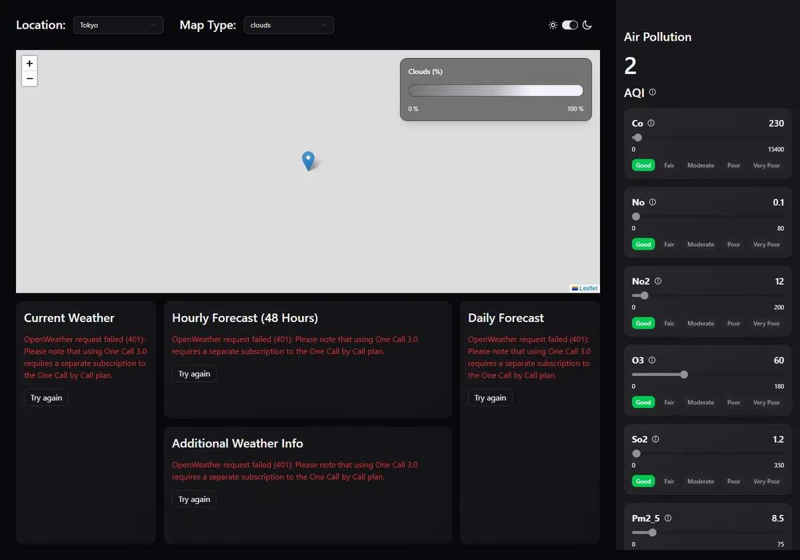

Handle API Errors Gracefully
Error boundaries with QueryErrorResetBoundary, readable messages and a Try again button.
Extension · built and browser-testedExtension: not in the video. This step builds on step 25. The code was type-checked, linted, built and run in headless Chrome against the production build with mocked OpenWeather answers (fake but schema-valid JSON, or the error answers described below) and MapTiler blocked.
What that proves: when One Call fails, each card shows the error and a "Try again" button while the rest of the page keeps working, and the number of retries is what the page says. What it does not prove: the exact wording of every real OpenWeather error, or your account's plan. The "Try again" button's behaviour is explained from React's and TanStack Query's documented behaviour; it was not clicked in the test.
Goal
After step 25, a failed geocode request shows a readable message. But the four weather cards and the air pollution panel load their data with useSuspenseQuery (step 19), and that hook doesn't hand you an error to display. It throws the error, like a crash, into the component tree. Nothing in the app catches it, so React removes everything. The browser test ran step 25's code with One Call answering 401:
requests: geo/1.0/direct?q=Tokyo
data/3.0/onecall?lat=35.68&lon=139.69 (401)
data/2.5/air_pollution?lat=35.68&lon=139.69
data/3.0/onecall?... (401, retry 1)
data/3.0/onecall?... (401, retry 2)
data/3.0/onecall?... (401, retry 3)
page error: Error: OpenWeather request failed (401): Please note that using One Call 3.0
requires a separate subscription to the One Call by Call plan.
page text: "" (blank page)The air pollution data arrived fine, the map was fine, and still the user saw nothing. In this step you add an error boundary around each card, so one failing request only replaces that card with a message and a "Try again" button. You also tune TanStack Query's defaults so a hopeless request isn't retried three times.
Why One Call is the request most likely to fail. The presenter uses the One Call API 3.0 (step 5). On OpenWeather, One Call 3.0 needs a separate "One Call by Call" subscription on your account, in addition to a normal API key. Without it, OpenWeather answers with 401 and the message: "Please note that using One Call 3.0 requires a separate subscription to the One Call by Call plan." (The test used this documented message.) Geocoding and Air Pollution keep working with the same key, so this is exactly the "one part fails, the rest works" situation. Check OpenWeather's current plans and terms yourself; this guide doesn't list prices.
New to error boundaries? What they catch and what they don't
An error boundary is a component that catches errors thrown while React renders the components inside it. Instead of letting the error take down the whole page, it shows a fallback UI that you choose. Think of it as try/catch for a part of the component tree.
It catches errors thrown during rendering, in lifecycle methods, and errors that useSuspenseQuery throws for a failed query. It does not catch errors in event handlers (like an onClick; use a normal try/catch there), in code that runs later (a setTimeout), or errors thrown by the boundary itself.
Without any boundary, React 19 removes the whole tree from the page when a render error happens, because showing half-broken UI could be worse than showing nothing. That is the blank page above.
Why a class component? (Everything else in this app is a function)
Since hooks arrived, almost all React code is written as function components. Error boundaries are the exception: React only lets you write one as a class component, because it needs two class-only methods, static getDerivedStateFromError and componentDidCatch. There is no hook equivalent. You write the class once and then use it like any component. (Libraries such as react-error-boundary wrap this class for you; here we write it ourselves so you can see every part.)
A class component in short: it extends Component<Props, State>, keeps its state in this.state, changes it with this.setState(...), reads props from this.props, and returns its JSX from a render() method.
Actions
- Create
src/components/WeatherErrorBoundary.tsxA new file next to
SidePanel.tsx. Contents below. - Wrap each card in
src/App.tsxImport the boundary and put
<WeatherErrorBoundary title="…">around each card's<Suspense>. - Wrap the air pollution panel in
src/components/SidePanel.tsxSame idea, title "Air Pollution".
- Set query defaults in
src/main.tsxChange
new QueryClient()to the version withretryandstaleTime.
The error boundary component
import { Component, type ErrorInfo, type ReactNode } from "react"
import { QueryErrorResetBoundary } from "@tanstack/react-query"
import Card from "./cards/Card"
type BoundaryProps = {
title: string
children: ReactNode
onReset: () => void
}
type BoundaryState = { error: Error | null }
// React only offers error boundaries as class components.
class ErrorBoundary extends Component<BoundaryProps, BoundaryState> {
state: BoundaryState = { error: null }
static getDerivedStateFromError(error: Error): BoundaryState {
return { error }
}
componentDidCatch(error: Error, info: ErrorInfo) {
console.error(`${this.props.title} failed`, error, info.componentStack)
}
retry = () => {
this.props.onReset() // lets TanStack Query fetch again instead of re-throwing the cached error
this.setState({ error: null })
}
render() {
if (!this.state.error) return this.props.children
return (
<Card title={this.props.title} childrenClassName="flex flex-col gap-4">
<p role="alert" className="text-red-500">
{this.state.error.message}
</p>
<button
onClick={this.retry}
className="self-start rounded-md border px-3 py-1 hover:bg-muted"
>
Try again
</button>
</Card>
)
}
}
// One boundary per card: if one request fails, the rest of the dashboard keeps working.
export default function WeatherErrorBoundary({ title, children }: { title: string; children: ReactNode }) {
return (
<QueryErrorResetBoundary>
{({ reset }) => (
<ErrorBoundary title={title} onReset={reset}>
{children}
</ErrorBoundary>
)}
</QueryErrorResetBoundary>
)
}Line by line
| Line(s) | Code | What it does & why |
|---|---|---|
| 1 | import { Component, type ErrorInfo, type ReactNode } from "react" | Component is the base class for class components. ErrorInfo is the type of the extra information React passes to componentDidCatch. ReactNode is the type for "anything React can render" (used for children). The type keyword marks the last two as type-only imports. |
| 2 | import { QueryErrorResetBoundary } from "@tanstack/react-query" | A small TanStack Query component that gives us a reset function, explained at line 51. |
| 3 | import Card from "./cards/Card" | The card frame from step 8, so the error looks like a normal card with its title. |
| 5–9 | type BoundaryProps = { title: string children: ReactNode onReset: () => void} | The props of the inner class: the card title to show, the wrapped components (children), and a function to call before retrying. |
| 11 | type BoundaryState = { error: Error | null } | The class's state: the caught error, or null when everything is fine. |
| 13 | // React only offers error boundaries as class components. | Explains why this file looks different from the rest of the app. |
| 14 | class ErrorBoundary extends Component<BoundaryProps, BoundaryState> { | Declares the class. The two generic parameters tell TypeScript the shapes of this.props and this.state. It is not exported: other files use the function wrapper at the bottom. |
| 15 | state: BoundaryState = { error: null } | The starting state: no error. |
| 17–19 | static getDerivedStateFromError(error: Error): BoundaryState { return { error }} | React calls this when a component inside throws while rendering. Whatever it returns becomes the new state, so the next render() shows the error card. It must be static (it belongs to the class, not an instance) and must not have side effects; it only computes state. |
| 21–23 | componentDidCatch(error: Error, info: ErrorInfo) { console.error(`${this.props.title} failed`, error, info.componentStack)} | Called after the error is caught. This is the place for side effects like logging. info.componentStack lists which components were rendering, which helps when debugging. In a real product you would send this to an error-monitoring service. |
| 25–28 | retry = () => { this.props.onReset() // ... this.setState({ error: null })} | Runs when the user clicks "Try again". First it calls onReset (TanStack's reset), then clears the error so render() shows the children again. Written as an arrow function property so this always points to the component when it is passed to onClick. |
| 30–31 | render() { if (!this.state.error) return this.props.children | No error: render the wrapped components unchanged. The boundary is invisible when everything works. |
| 32–33 | return ( <Card title={this.props.title} childrenClassName="flex flex-col gap-4"> | With an error: draw a card with the same title as the card that failed, so the layout keeps its shape. flex flex-col gap-4 stacks message and button with space between. |
| 34–36 | <p role="alert" className="text-red-500"> {this.state.error.message}</p> | Shows the message, which comes from fetchJson (step 25): "OpenWeather request failed (401): …". Red text; role="alert" makes screen readers announce it. |
| 37–42 | <button onClick={this.retry} className="self-start rounded-md border px-3 py-1 hover:bg-muted"> Try again | The retry button. self-start stops it stretching across the card; rounded-md border px-3 py-1 gives a small outlined button; hover:bg-muted uses the theme's muted colour on hover, so it works in light and dark mode. |
| 48 | // One boundary per card: ... | Explains the design choice. |
| 49 | export default function WeatherErrorBoundary({ title, children }: { title: string; children: ReactNode }) { | The component other files use. It only needs a title and children; it supplies onReset itself. |
| 51–52 | <QueryErrorResetBoundary> {({ reset }) => ( | This TanStack component takes a function as its child (a "render prop") and calls it with reset. Why needed: TanStack Query keeps a failed query's error in its cache. If the boundary just cleared its own state, the card would render, useSuspenseQuery would see the cached error, and throw it again immediately. reset() tells the queries inside this area: "next time you're rendered, fetch again instead of re-throwing". |
| 53–55 | <ErrorBoundary title={title} onReset={reset}> {children}</ErrorBoundary> | Connects the two: our class gets TanStack's reset as onReset. |
reset before setState is what turns "show the cached error again" into "fetch again".Wrap the cards (App.tsx and SidePanel.tsx)
The full App.tsx is the step-25 file with an import and four wrappers. Here are the changed parts:
import WeatherErrorBoundary from "./components/WeatherErrorBoundary"
...
<div className="col-span-1 2xl:row-span-2 order-2">
<WeatherErrorBoundary title="Current Weather">
<Suspense fallback={<CurrentSkeleton />}>
{coords ? <CurrentWeather coords={coords} /> : <CurrentSkeleton />}
</Suspense>
</WeatherErrorBoundary>
</div>
<div className="col-span-1 order-3 2xl:order-4 2xl:row-span-2">
<WeatherErrorBoundary title="Daily Forecast">
<Suspense fallback={<DailySkeleton />}>
{coords ? <DailyForecast coords={coords} /> : <DailySkeleton />}
</Suspense>
</WeatherErrorBoundary>
</div>
<div className="col-span-1 md:col-span-2 2xl:row-span-1 order-4 2xl:order-3">
<WeatherErrorBoundary title="Hourly Forecast (48 Hours)">
<Suspense fallback={<HourlySkeleton />}>
{coords ? <HourlyForecast coords={coords} /> : <HourlySkeleton />}
</Suspense>
</WeatherErrorBoundary>
</div>
<div className="col-span-1 md:col-span-2 2xl:row-span-1 order-5">
<WeatherErrorBoundary title="Additional Weather Info">
<Suspense fallback={<AdditionalInfoSkeleton />}>
{coords ? <AdditionalInfo coords={coords} /> : <AdditionalInfoSkeleton />}
</Suspense>
</WeatherErrorBoundary>
</div>| Line(s) | Code | What it does & why |
|---|---|---|
| 21 | import WeatherErrorBoundary from "./components/WeatherErrorBoundary" | Default import of the new component. |
| 88 | <WeatherErrorBoundary title="Current Weather"> | Wraps the Current Weather area. The title matches the real card's title, so the error card looks like it belongs there. |
| 89–91 | <Suspense fallback={<CurrentSkeleton />}> … </Suspense> | Unchanged from step 25, now inside the boundary. Order matters: the boundary must be above the component that throws. Suspense handles "still loading", the boundary handles "failed". |
| 92 | </WeatherErrorBoundary> | Closes the wrapper. |
| 95–99, 102–106, 109–113 | (same for Daily, Hourly, Additional) | One boundary per card, each with its own title. Separate boundaries mean separate "Try again" buttons and, through QueryErrorResetBoundary, separate resets. |
In SidePanel.tsx the air pollution part gets the same treatment (lines 12 and 32–36 of the step-26 file):
import WeatherErrorBoundary from "./WeatherErrorBoundary"
...
<WeatherErrorBoundary title="Air Pollution">
<Suspense fallback={<SidePanelSkeleton />}>
<AirPollution {...props} />
</Suspense>
</WeatherErrorBoundary>The close button (the chevron above it) stays outside the boundary, so on a phone the user can still close the panel if air pollution fails.
Fewer retries, longer freshness (main.tsx)
By default TanStack Query retries a failed query 3 times, waiting longer each time (1 s, 2 s, 4 s…). That is great for a shaky mobile connection, but useless for a wrong key or a missing subscription: those won't fix themselves in a few seconds. With the repo code, the invalid-key test recorded 28 requests in 20 seconds. Each retry also keeps the user looking at a skeleton for longer before the error appears.
import { StrictMode } from "react"
import { createRoot } from "react-dom/client"
import "./index.css"
import App from "./App.tsx"
import { QueryClient, QueryClientProvider } from "@tanstack/react-query"
import ThemeProvider from "./components/ThemeProvider.tsx"
const queryClient = new QueryClient({
defaultOptions: {
queries: {
retry: 1, // one quick retry instead of three: a wrong key or missing subscription won't fix itself
staleTime: 5 * 60 * 1000, // weather data stays fresh for 5 minutes: switching back to a city reuses it
},
},
})
createRoot(document.getElementById("root")!).render(
<StrictMode>
<QueryClientProvider client={queryClient}>
<ThemeProvider>
<App />
</ThemeProvider>
</QueryClientProvider>
</StrictMode>
)| Line(s) | Code | What it does & why |
|---|---|---|
| 1–6 | import ... | Unchanged from step 24: React's StrictMode, the root renderer, the CSS, App, TanStack's client and provider, and the theme provider. |
| 8 | const queryClient = new QueryClient({ | Creates the one cache for the whole app, now with options. |
| 9–10 | defaultOptions: { queries: { | Defaults for every query in the app. Any single useQuery can still override them. |
| 11 | retry: 1, // one quick retry ... | Try once more after a failure, then give up and report the error. One retry still smooths over a single dropped request. See retry. |
| 12 | staleTime: 5 * 60 * 1000, // ... | Data counts as fresh for 5 minutes (the value is in milliseconds: 5 × 60 × 1000 = 300 000). While fresh, switching back to a city you already viewed, or returning to the browser tab, uses the cached data without a new request. The default stale time is 0, which refetches on every such occasion. Weather doesn't change every second, so this saves API calls. |
| 17–25 | createRoot(...).render( ... ) | Unchanged: QueryClientProvider makes this client available to every component. |
What the test showed
With the step-26 code and One Call answering 401, the recorded requests were: geocode, One Call (401), air pollution, One Call again (401, the single retry). No page error, nothing blank:

What you should see
npm run buildsucceeds;npm run lintstill reports the oneThemeProvider.tsxerror (fixed in step 27).- With a working key and One Call subscription: no visible change. Boundaries are invisible when nothing fails.
- Without the One Call subscription (or with the test's mocked 401): four cards with the red message and "Try again", air pollution still showing, and in DevTools → Network exactly two
onecallrequests (verified). - In the console: one
Current Weather failed …style log per boundary, fromcomponentDidCatch.
Common mistakes
- Boundary inside the component that throws: a boundary catches errors from its children only. Wrapping JSX inside
CurrentWeathercan't catch the error from that same component'suseSuspenseQuery. Wrap it from the outside, inApp.tsx. - "Try again" shows the error again instantly, no new request:
reset()wasn't called (for example the class was used withoutQueryErrorResetBoundary), so the cached error is re-thrown. - Forgetting
staticongetDerivedStateFromError: React won't find it and the boundary won't catch anything. - Expecting it to catch a failing
onClick: boundaries only catch rendering errors. Usetry/catchin event handlers. - One boundary around the whole app only: it prevents the blank page, but then one failed request replaces the entire dashboard. Smaller boundaries keep the rest usable.
- Setting
retry: 0: possible, but then a single dropped connection shows an error immediately. One retry is a good middle ground.
useSuspenseQuerythrows failed queries into the tree; without a boundary React removes the whole app (verified blank page).- Error boundaries are class components with
getDerivedStateFromError(state) andcomponentDidCatch(logging). QueryErrorResetBoundary'sresetmakes "Try again" fetch again instead of re-throwing the cached error.- One boundary per card: when One Call fails, the map and air pollution keep working.
retry: 1andstaleTime: 5 mingive faster errors and fewer repeat requests.